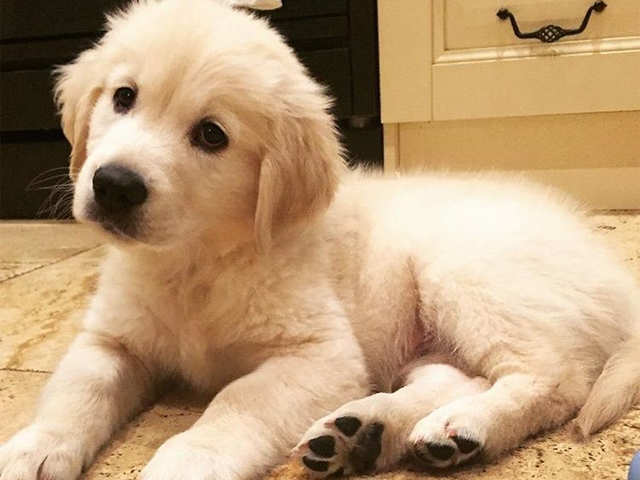

Dogs are the most variable mammal on earth with around 450 globally recognized dog breeds.In the Victorian era, directed human selection developed the modern dog breeds, which resulted in a vast range of phenotypes.Most breeds were derived from small numbers of founders within the last 200 years,and since then dogs have undergone rapid phenotypic change and were formed into today's modern breeds due to artificial selection imposed by humans. The skull, body, and limb proportions vary significantly between breeds, with dogs displaying more phenotypic diversity than can be found within the entire order of carnivores. These breeds possess distinct traits related to morphology, which include body size, skull shape, tail phenotype, fur type and colour.Their behavioural traits include guarding, herding, and hunting,retrieving, and scent detection. Their personality traits include hypersocial behavior, boldness, and aggression,which demonstrates the functional and behavioral diversity of dogs.As a result, today dogs are the most abundant carnivore species and are dispersed around the world.The most striking example of this dispersal is that of the numerous modern breeds of European lineage during the Victorian era.
Popular Breeds

The Golden Retriever is a British breed of retriever dog of medium size. It is characterised by a gentle and affectionate nature and a striking golden coat. It is commonly kept as a pet and is among the most frequently registered breeds in several Western countries. It is a frequent competitor in dog shows and obedience trials; it is also used as a gundog, and may be trained for use as a guide dog.
The Golden Retriever was created by Sir Dudley Marjoribanks at his Scottish estate Guisachan in the late nineteenth century. He cross-bred Flat-coated Retrievers with Tweed Water Spaniels, with some further infusions of Red Setter, Labrador Retriever and Bloodhound. The breed was recognised by the Kennel Club in 1913, and during the interwar period spread to many parts of the world.
The sweet-faced, lovable Labrador Retriever is America's most popular dog breed. Labs are friendly, outgoing, and high-spirited companions who have more than enough affection to go around for a family looking for a medium-to-large dog. The sturdy, well-balanced Labrador Retriever can, depending on the sex, stand from 21.5 to 24.5 inches at the shoulder and weigh between 55 to 80 pounds. The dense, hard coat comes in yellow, black, and a luscious chocolate. The head is wide, the eyes glimmer with kindliness, and the thick, tapering 'otter tail' seems to be forever signaling the breed's innate eagerness. Labs are famously friendly. They are companionable housemates who bond with the whole family, and they socialize well with neighbor dogs and humans alike. But don't mistake his easygoing personality for low energy: The Lab is an enthusiastic athlete that requires lots of exercise, like swimming and marathon games of fetch, to keep physically and mentally fit.
The Pug is often described as a lot of dog in a small space. These sturdy, compact dogs are a part of the American Kennel Club’s Toy group, and are known as the clowns of the canine world because they have a great sense of humor and like to show off.
Even though these are purebred dogs, you may find them in the care of shelters or rescue groups. Remember to adopt! Don’t shop if you want to bring a dog home.
Generally considered dogkind's finest all-purpose worker, the German Shepherd Dog is a large, agile, muscular dog of noble character and high intelligence. Loyal, confident, courageous, and steady, the German Shepherd is truly a dog lover's delight. German Shepherd Dogs can stand as high as 26 inches at the shoulder and, when viewed in outline, presents a picture of smooth, graceful curves rather than angles. The natural gait is a free-and-easy trot, but they can turn it up a notch or two and reach great speeds. There are many reasons why German Shepherds stand in the front rank of canine royalty, but experts say their defining attribute is character: loyalty, courage, confidence, the ability to learn commands for many tasks, and the willingness to put their life on the line in defense of loved ones. German Shepherds will be gentle family pets and steadfast guardians, but, the breed standard says, there's a 'certain aloofness that does not lend itself to immediate and indiscriminate friendships.
Husky is general term for a dog used in the polar regions, primarily and specifically for work as sled dogs. It refers to a traditional northern type, notable for its cold-weather tolerance and overall hardiness.[1][2] Though dogs such as the AKC/CKC registered Alaskan Malamute may not contain "Husky" in their official name, the term still encompasses dogs of their type. Modern racing huskies which maintain arctic breed traits (also known as Alaskan huskies) represent an ever-changing crossbreed of the fastest dogs.[3][4]
Huskies have continued to be used in in sled-dog racing, as well as expedition and trek style tour businesses, and as a means of essential transportation in rural communities.Huskies are also kept as pets, and groups work to find new pet homes for retired racing and adventure-trekking dogs.
The Rottweiler is a robust working breed of great strength descended from the mastiffs of the Roman legions. A gentle playmate and protector within the family circle, the Rottie observes the outside world with a self-assured aloofness. A male Rottweiler will stand anywhere from 24 to 27 muscular inches at the shoulder; females run a bit smaller and lighter. The glistening, short black coat with smart rust markings add to the picture of imposing strength. A thickly muscled hindquarters powers the Rottie's effortless trotting gait. A well-bred and properly raised Rottie will be calm and confident, courageous but not unduly aggressive. The aloof demeanor these world-class guardians present to outsiders belies the playfulness, and downright silliness, that endear Rotties to their loved ones. (No one told the Rottie he's not a toy breed, so he is liable plop onto your lap for a cuddle.) Early training and socialization will harness a Rottie's territorial instincts in a positive way.